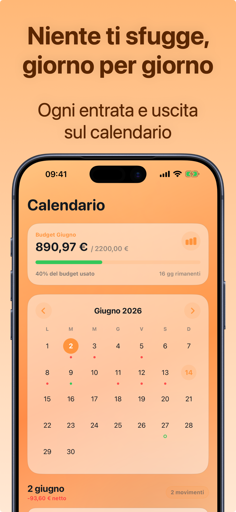

Bilancio familiare: come farlo senza impazzire
Il bilancio familiare è la fotografia di quanto entra e quanto esce in casa ogni mese. Non servono ragioneria né fogli di calcolo: servono tre liste — entrate, spese fisse, spese variabili — e dieci minuti a settimana.
La struttura: tre liste
- Entrate: stipendi, eventuali entrate extra, assegni. In una famiglia tipica sono 1-3 voci stabili.
- Spese fisse: mutuo o affitto, bollette, assicurazioni, rate, abbonamenti, scuola. Sono prevedibili: vanno censite una volta e aggiornate raramente.
- Spese variabili: spesa alimentare, benzina, farmacia, svago, vestiti. È qui che il bilancio si gioca — ed è qui che serve il tracciamento quotidiano.
La differenza entrate − fisse è il vero budget mensile della famiglia: quello che puoi assegnare alle spese variabili e al risparmio.
Le categorie giuste per la casa
Poche e chiare: Casa (bollette, manutenzione), Cibo (spesa e pasti fuori, o separati se mangiate spesso fuori), Trasporti, Salute, Figli/Scuola, Svago, Shopping. Con più di 8-10 categorie la classificazione diventa un lavoro e la abbandoni.
La routine che lo tiene vivo
- Ogni giorno: chi fa la spesa la registra al momento (2 secondi, anche dal widget).
- Ogni settimana: 5 minuti insieme sul calendario delle spese: qualcosa di anomalo? categorie che corrono?
- Ogni mese: confronto con il mese precedente e decisione concreta: cosa tagliamo, cosa va bene così, quanto mettiamo da parte.

L'errore da evitare
Contare solo le spese grandi. Nel bilancio di una famiglia le voci che sfuggono sono decine di micro-spese: merende, parcheggi, ricariche, acquisti online sotto i 20€. Sommate, valgono spesso quanto una bolletta. Il bilancio funziona solo se registra tutto — per questo la registrazione deve costare due secondi, non due minuti.
Come tenere il bilancio familiare con Crena
- Inserisci le entrate ricorrenti (stipendi) e le spese fisse (mutuo, bollette, abbonamenti) nei Ricorrenti: si registrano da soli ogni mese, con l'impatto già calcolato.
- Imposta il budget mensile della famiglia = entrate − spese fisse − risparmio desiderato.
- Registra le spese variabili al momento, organizzate per categoria (Casa, Cibo, Trasporti…): la categoria viene suggerita da sola.
- Usa il Calendario per la revisione settimanale: ogni giorno mostra il suo netto e i suoi movimenti.
- A fine mese, Statistiche: confronto entrate/uscite, categorie più pesanti e saldo di inizio/fine mese. Con Premium esporti l'estratto conto per l'archivio di famiglia.
Domande frequenti
Ogni quanto va aggiornato il bilancio familiare?
Serve un conto separato per le spese di casa?
Come coinvolgo il partner?
Prova Crena gratis
Spese in due secondi, budget mensile e statistiche chiare. Senza registrazione e senza collegare il conto.
Scarica suApp Store